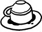

Mekân ne kadar özenle seçilmiş ya da modern döşenmiş, bireyler ne kadar kadrince muktedir veya eleştirel aklın temsilcisi konumunda olursa olsun, hani neredeyse hiç şaşmaz, uzun, katmerli, yılankavi sohbet ve afiyet akşamlarının, kolektif yemeklerin, entelektüel sohbetlerin illaki bir yerinde, hani eninde sonunda, çıkar kahve fincanları ortaya, içilir kahveler, niyet edilir, agnostikmiş imanlıymış fark etmez, birden anlamını yitiriverir terminoloji, birden herkes eşitlenir inanç noktasında, soğurken fincanlar ortam da, sohbet de usuldan değişir, telvenin akışı kadar ağır aksak bir tempoyla. Daha az evvel nice kallavi konularda dem vurabilen, toplumsal düzeni, olmayan nizamı, statükoyu ve açılımlarını elinde neşter, dilinde acımtırak bir tat, soğukkanlılıkla kesip biçen aydınlar, aydın insanlar birer birer yalnızlıklarının farkına varmaya başlayıp, büzülürler kendi koltuklarında. Birdenbire çözümlenebilecek, analiz edilecek, akılcı önermelerle irdelenebilecek bir yapı olmaktan çıkıverir kâinat dediğin. Kudretten hadde, bilgiden sezgiye, muktedirlikten müteredditliğe geçiş anıdır bu. Daha az evvel dünyayı değiştirmekten bahsetmiş olabilirsin ama mademki fal anı yaklaşmaktadır, birden kendiliğinden, esas kâinatın seni nasıl değiştireceğini fark edersin, hayatın tekinsizliğini, bilinmeyeni ve belki de hiç bilinemeyecek olanları düşünürken yakalarsın kendini, mistisizme açılan pencerenin önünde soluklanırsın içinde dırdır eden mantık beyin sesine inat.
Entelektüel formasyonunun lügatinde kader kelimesine yer olmayanların kadere inanmaya en çok yaklaştıkları, belki de başladıkları andır kahve falına bakılma vakti. Akılcı, yere sağlam basan, aydınlanmacı bilinçli öznenin, öznelikten de, bilincin güzergâhından da uzaklaşmaya başladığı andır. Bilmem ki neyim, ne kadarı benim ellerimde, yani ne kadarı bana ait benim hayatımın... Alametler nasıl toplanır nerelerden, işaretler, kerametler?.. Daha az evvel koca bir toplumun akıbetine yön verebilecek, meğerki zaman zaman hükmedebilecek kudrette ve yetenekte olanların kendi hayatları karşısındaki aczlerini, çocuksu şaşkınlıklarını hissettikleri andır kahve falı bakılma zamanı. Açılır fincan. Soğumuştur yeterince. Bir sessizlik. Bir saygılı bekleyiş fincanı ve kelimelerin tılsımını elinde tutan muhterem zata.
Türk aydınının muazzam sentezidir kahve falı, düşünmeden yapılan birçok adım gibi hesap kitaptan uzaktır, sahicidir, samimidir. Sırtını akışkan bir geleneğe yasladığı için sırtını akışkan geleneklere yaslayamayan bir toplumda, başka birçok şeyin aksine oturmuş kendi kendini hazmedebilmiş bir sentez. Sanmam ki başka başka ülkelerde böyle sahneler olası olsun. Dünyanın kaç yerinde tanımı ve duruşu gereği aklı ve akılcı çözümlemeleri öne çıkaran okumuş seçilmiş aydın zümre, egosundan böylesine hızla sıyrılarak, bir çocuk gibi kendisi hakkındaki kararların kendisi dışındaki mekanizmalar tarafından alınmakta oluşuna teslimiyet göstererek, ego dışına, akıl dışına, ben dışına kaya kaya en nihayetinde neredeyse mistik bir düzlemde durmayı böylesine itirazsız kendiliğinden bile isteye kabul ve idrak edebilir ki... Bir İngiliz entelektüeli için, rasyonalist, iyi eğitimli, hele hele sol damardan beslenmiş biriyse mesela, tamamı analitik eleştirel konuşmalar ve yorumlarla örülü nezih bir akşamın sonunda masaya bir zar atmak ya da bir tavuğun kanatlarını yolmak suretiyle ve çıkacak şekillerden ya da sayılardan hareketle falına bakma baktırma ihtiyacı duymak pek de tasavvur edilesi bir şey olmasa gerek. Bir Alman eleştirmen ya da Amerikalı akademisyen için de düşünemiyorum bu sahneyi. Sen tut saatlerce eleştir memleketinin dış politikasını, sistemi vur yerden yere, insanların akıl almaz eğilimlerini irdele, sonra da akıl dışı bir mola ver, otur yüreğin ağzında heyecan içinde bir kahve fincanı etrafında bekle. Bekle ki neyse halin çıksın falın.
Kahve falı deyip geçme. Zannımca kendisi mühim bir role sahiptir toplumsal ve bireysel sergüzeştimizde. Türk aydınının muazzam çelişkisi ve potansiyeli, kudreti ve korkuları kahve fincanında saklıdır. Kültürü akışkan ve esnek, katmanlı ve komplekssiz kılmayı sağlayacak çözüm önerileri de kim bilir kahve falı ile fal öncesi rasyonalitemizi harmanlayabilen o muazzam kimyada barınmaktadır.
İstanbul